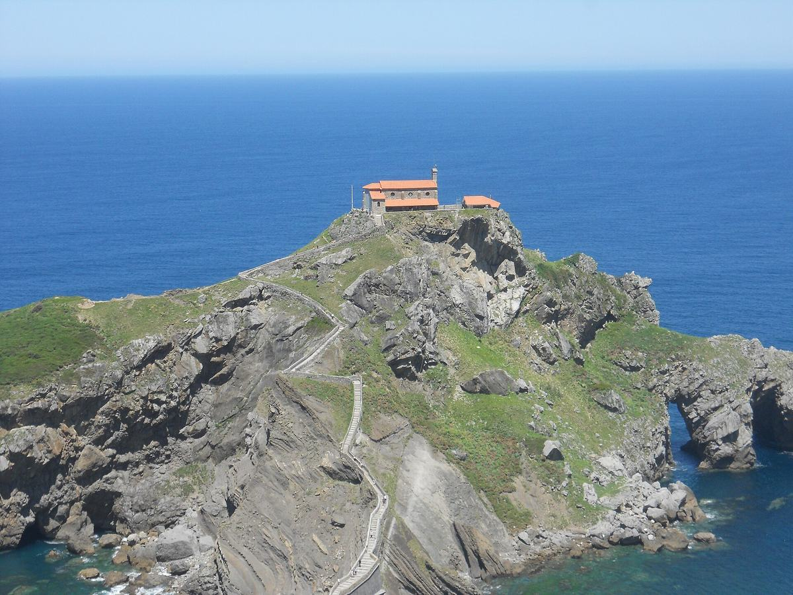

Civray → Pays basque → Asturies → El Bierzo → Burgos → Pampelune → Pyrenees → Civray. Une boucle de sept jours en van, cinq personnes, cinq campings a confirmer et une bonne dose de route.
| Nuit | Camping | Statut |
|---|---|---|
| J1 · Gorliz | Camping Gorliz | A confirmer sur place |
| J2 · Vidiago | Camping La Paz | Mail envoye, en attente |
| J3 · El Bierzo | Camping Rivera del Cua | Mail envoye, en attente |
| J4 · Quintanar de la Sierra | Camping Arlanza | Acompte verse |
| J5 · Pampelune | — | A chercher et reserver |
| J6 · Saint-Jean-Pied-de-Port | Camping Municipal Plaza Berri | A confirmer sur place |
3 tentes 2 places + 1 place dans le van + 1 hamac, pour 5 personnes.
Achats en petites epiceries au fil de la route, sans dependre de la glaciere. Un vrai restaurant environ tous les 2 jours.
Pas de conflit San Fermin, mais fin aout reste haute saison en Espagne : reserver les campings restants au plus vite.
3 alternatives matinales : sans detour, Covadonga + lacs, ou rando Ruta del Cares. Voir la page du jour 3.